Summer 2027 internships and research in medtech R&D
Research
Spinal cord repair in the Schmidt Lab, preparation for in vivo models, and environmental chemistry in the Bowden Lab.
Schmidt Lab, University of FloridaUndergraduate researcher, Aug 2025 to present
Teaching the spinal cord to regrow
After a spinal cord injury, the damaged region becomes a cavity ringed by scar tissue and activated immune cells. Severed axons can't cross it, so the signal stops there.
I work on injectable hydrogels made from decellularized porcine peripheral nerve (iPPN). Peripheral nerve matrix carries the cues that let peripheral nerves heal, and as an injectable it can fill an irregular injury cavity directly.
I test these platforms in 3D organotypic spinal cord slice cultures, mentored by postdoctoral researcher Dr. Amanda de Castro Juraski.
Immunohistochemistry and confocal imaging of slice cultures for p75, GFAP, and IBA1
Built a research poster for UF's Fall Undergraduate Research Expo from that confocal data
Leading an organotypic slice-culture project, now being written up as a first-author manuscript
Designed a combination therapy concept pairing engineered Schwann cells, a PLGA-encapsulated PTEN inhibitor, and chondroitinase ABC inside an iPPN scaffold
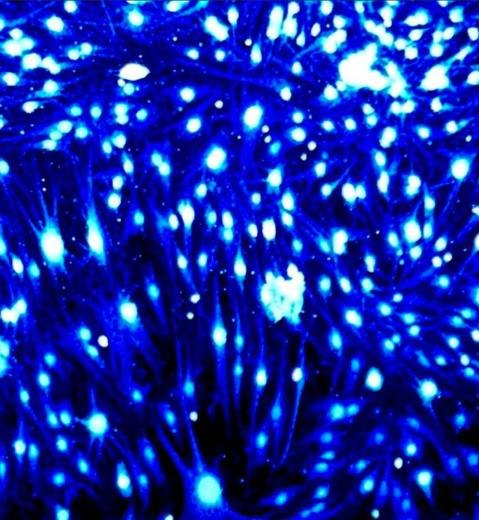
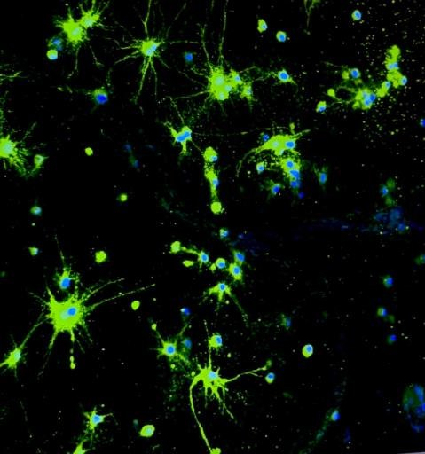
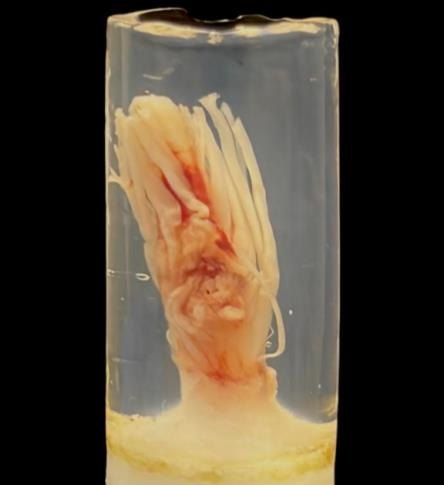
Schwann cells and astrocytes by immunocytochemistry, and a nerve tissue sample from the lab. The blue, green, and magenta used across this site borrow from the confocal channels in my imaging.
Schmidt Lab, animal model trainingCompleted August 2026
From the slice to the animal
Slice cultures show how tissue responds to a therapy. Animal models show whether function comes back. My slice model starts here. A laminectomy removes the bony lamina over T7/T8 to expose the cord, and a contusion of about 1.5 to 2 N creates the injury.
I've completed UF Animal Care Services training so I can take part in that in vivo work directly.
Rodent survival surgery
Survival surgery records
Drug calculations
Working in ACS-managed aBSL-2 facilities
Working with hazards in the animal facility
Animal Care Services orientation
Schmidt Lab, my research projectFirst-author manuscript in preparation with Dr. Amanda de Castro Juraski and Dr. Christine Schmidt
An injured spinal cord in a well plate
Testing every spinal cord therapy in live animals is slow, expensive, and hard to translate to patients. NIH's 2025 priority on New Approach Methodologies and the FDA Modernization Act 2.0 both push research toward models that reduce that reliance.
My project builds one: organotypic slices from an injured rat spinal cord, cultured in 3D inside iPPN hydrogel. One animal yields about 20 slices, so a single injury can test many conditions side by side.
Thoracic cord (T1 to T12) from a T7/T8 laminectomy and contusion model, fixed and embedded in 0.5% agarose
Sectioned on a vibratome into about 20 slices at 350 µm
Each slice sandwiched between two 10 µL iPPN layers in a silicone mold, with hydrogel-free slices as controls
Immunostained for p75, GFAP, BDNF, c-Jun, and Iba1 with DAPI, then imaged by confocal microscopy
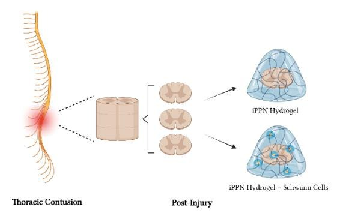
Study design: injured slices cultured in iPPN alone or iPPN with Schwann cells.
Aim 1. Measure how iPPN affects neurite outgrowth, neuroinflammation, and neuroplasticity, and compare the results with the lab's published in vivo data.
Aim 2. Co-culture Schwann cells with the model to study neurite extension and myelination.
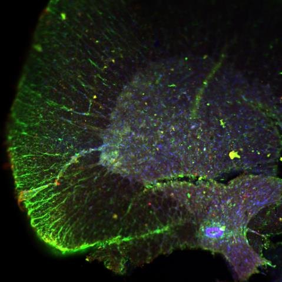
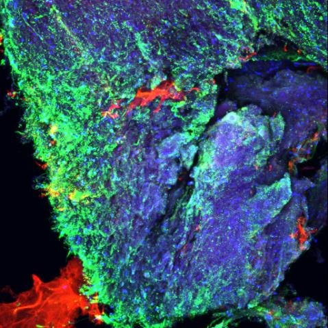
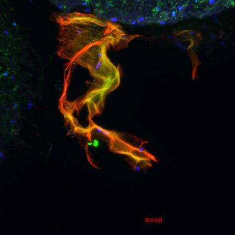
Organotypic thoracic SCI slices, showing how Schwann cells distribute alongside reactive astrocytes and microglia.
Bowden Lab, University of FloridaResearch assistant, Jun to Aug 2025
Tracing forever chemicals in Tampa Bay
Per- and polyfluoroalkyl substances (PFAS), like PFOS, barely break down in the environment or the body. Their carbon-fluorine backbone is what makes them so persistent.
Analyzed 511 surface water samples across more than 2,590 km of Tampa Bay for 28 PFAS using targeted HPLC-MS/MS
Paired targeted analysis with total organic fluorine measurements to estimate total PFAS
Contributed to mapping pollutant levels across the region
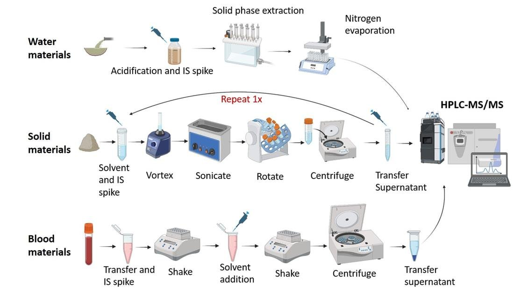
Sample prep workflow to HPLC-MS/MS
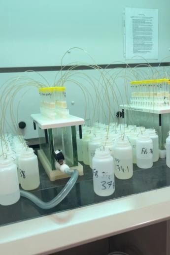
Solid phase extraction
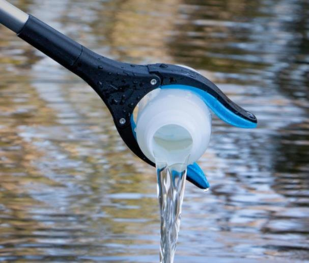
Surface water sampling
Engineering
Machine learning for histology, a wearable cardiac sensor, and automation on a medical device production line.
TOAD, Dream Team EngineeringSoftware and research, 2024 to present
Reading osteoarthritis from histology
TOAD (Total Osteoarthritis Detection) is a machine-learning pipeline that segments knee histology slides with HRNet and U-Net convolutional networks, so joint damage can be measured consistently instead of scored by eye.
The goal is to expand SEKO's anatomical coverage to whole-joint segmentation, bring in human histopathology data, and find new predictive biomarkers like osteophytes.
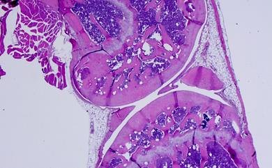
H&E-stained knee section
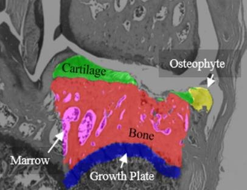
Segmented tissue classes
Built out the segmentation pipeline around HRNet and U-Net convolutional networks
Reviewed SAM-based segmentation repositories as candidate models
Studied how different histology stains change segmentation quality
Cardiac Data Device, Dream Team EngineeringDesign, 2024 to present
Blood pressure from a pulse of light
The Cardiac Data Device is a wearable that estimates blood pressure using photoplethysmography (PPG). An LED shines into the wrist, a photodiode measures how much light the pulsing artery absorbs, and the result is a waveform that tracks every heartbeat.
The device pairs PPG sensors with machine learning to turn that waveform into a blood pressure estimate, without the cuff. It monitors continuously without the patient starting a reading, and sends data to their phone for private sharing with their care team.
A low-cost, non-invasive blood pressure tracker that everyday people can buy doesn't exist yet. That's the gap we're building for.
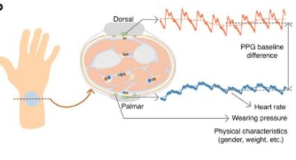
PPG sensing at the wrist
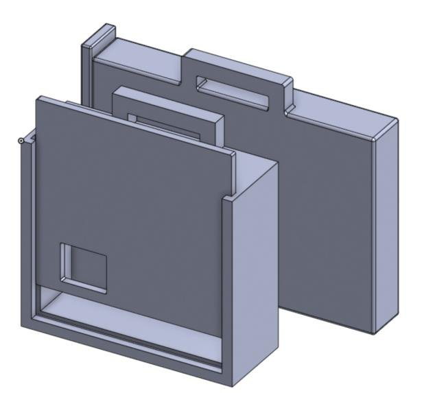
Enclosure CAD
Across Dream Team Engineering I work on two teams at once: ML diagnostics with TOAD and wearable hardware with the Cardiac Data Device.
Artemis PlasticsEngineering intern, Jun 2024 to Aug 2025
Manufacturing that has to be right every time
Artemis is an FDA-registered, ISO 13485:2016 certified medical device manufacturer. Every fixture and process change on the floor has to hold up to that standard.
Magnetic assembly pen. Modeled in SolidWorks and resin printed, it lets operators assemble scalpels while minimizing handling of sharp blades.
Lumohs lighted scalpel. Helped design, develop, and test a single-use scalpel with a built-in white, red, or blue LED at the blade junction for better visibility on every skin tone, and a sealed handle made from recycled plastic.
Heat staking trials. The blade sits on raised plastic, and a heated press melts that plastic over it so the blade can't come loose. I varied temperature, pressure, and assembly conditions to evaluate joint quality and process repeatability.
Pad printing fixture for Stryker. Held a syringe perfectly still for printing using snaps, spring-loaded components, and levers.
Automated labeling. Designed a custom conveyor-based labeling system.
Lumohs lighted scalpel
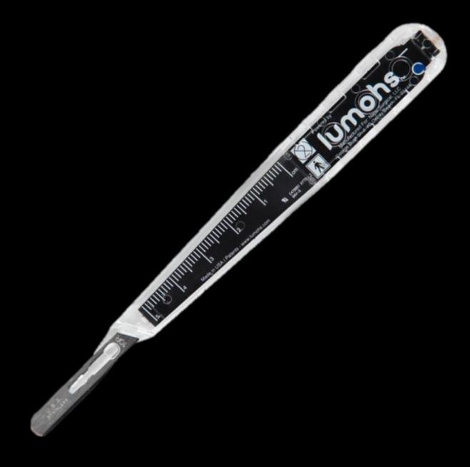
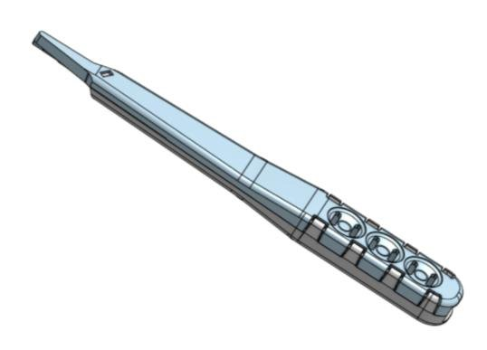
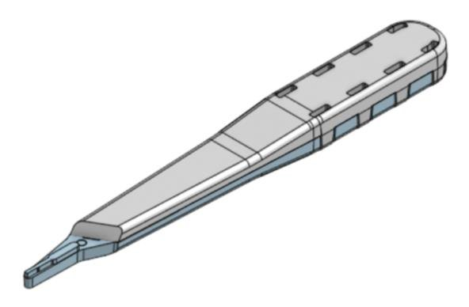
Magnetic assembly pen
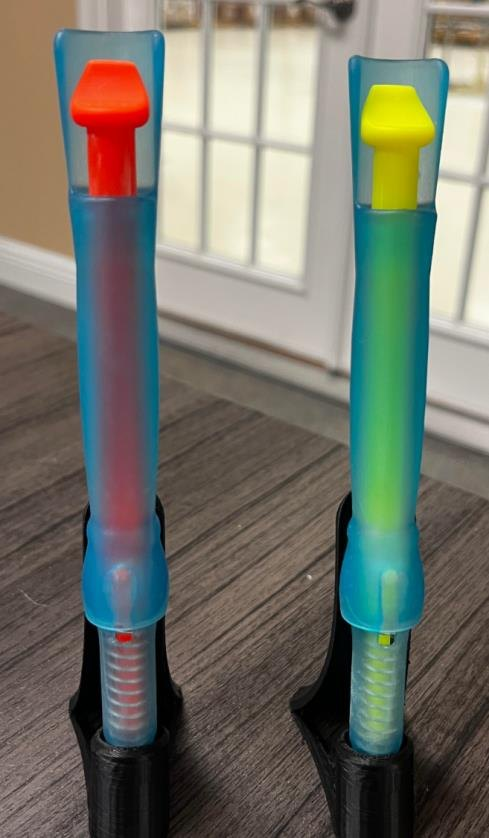
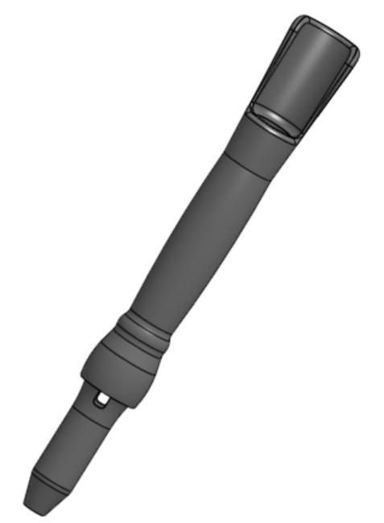
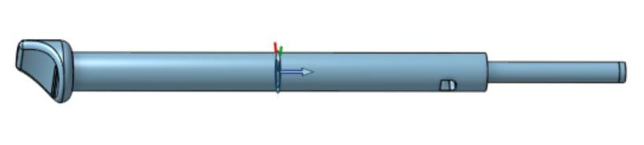
Heat staking trials
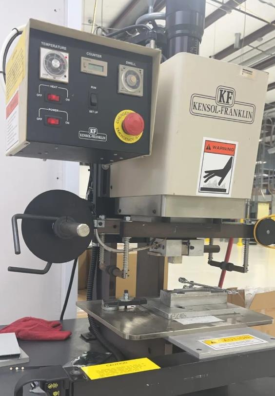
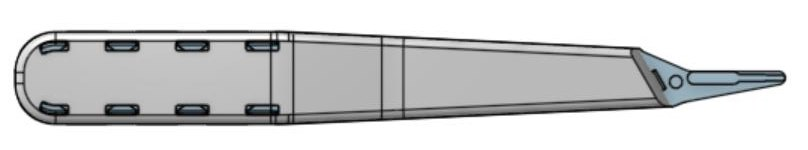
Syringe pad printing fixture for Stryker
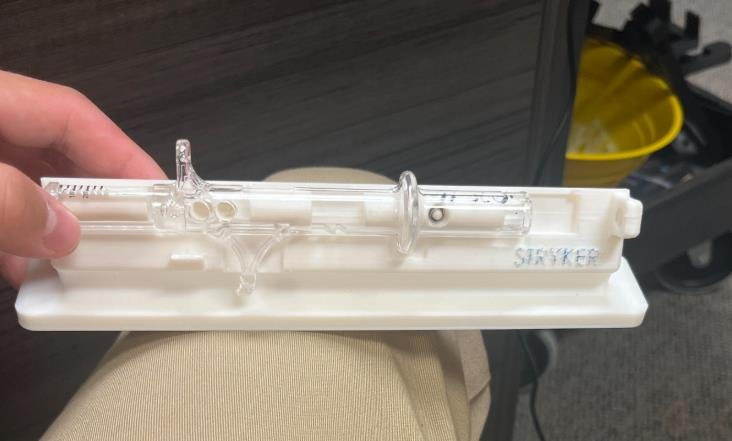
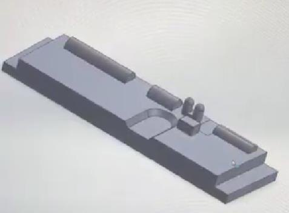
More from the production floor
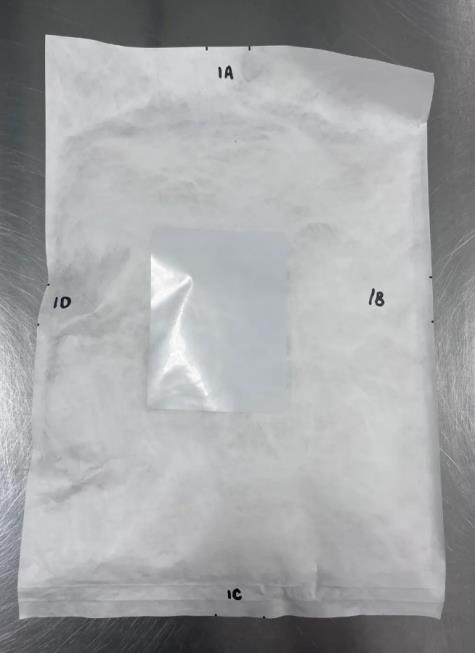
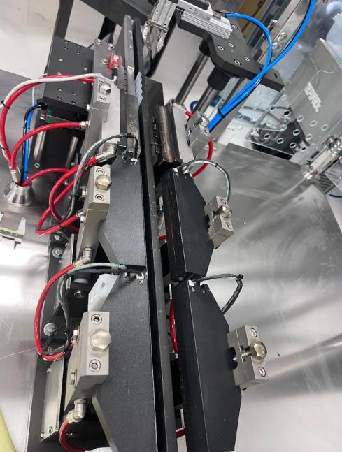
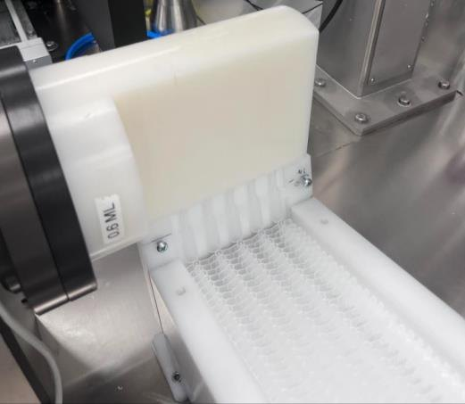
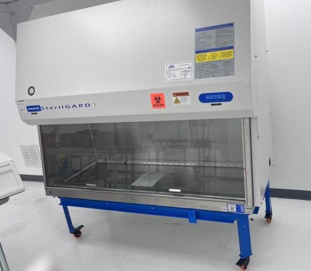
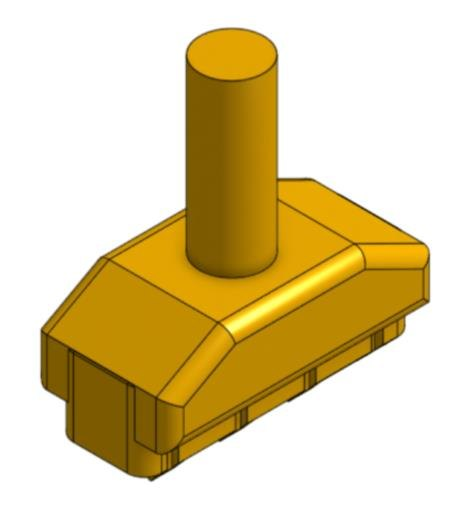
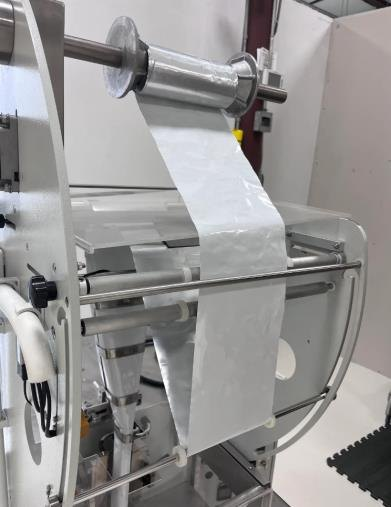
Advanced Myographic Technologies
SOFi acoustic myography system
Acoustic myography reads muscle function from the sound of contracting fibers. It flags abnormalities using three measures: how many fibers are recruited during movement, how long they stay active, and how quickly they fire repeatedly.
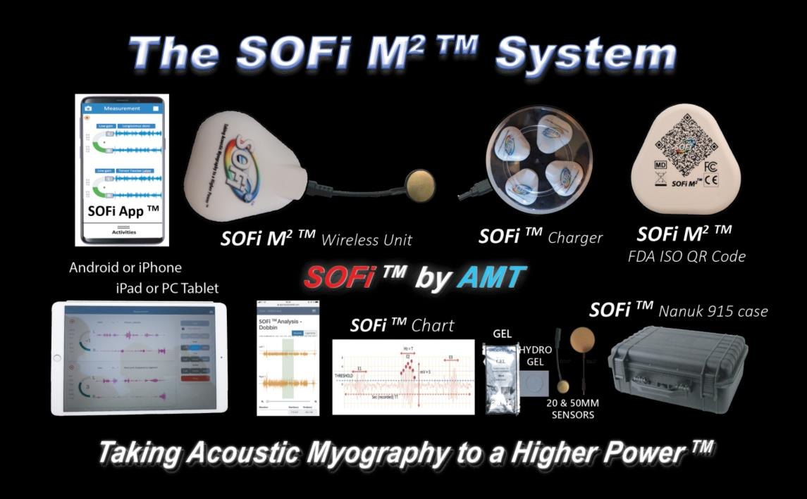
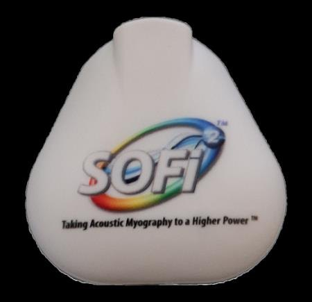
Leadership
Building the undergraduate research community at UF.
Center for Undergraduate Research (CURBS)
Director of Special Projects, promoted April 2026 Special Projects Ambassador before that
I lead a team of ambassadors and plan UF's Fall and Spring Undergraduate Research Expos, the Fall Undergraduate Research Symposium, and FURLS, the Florida Undergraduate Research Leadership Summit.
Engineering Leadership Circle
Member, 2026 to present
An honor society in UF's Herbert Wertheim College of Engineering that recognizes leadership and character. Members mentor fellow engineers and build connection across the college.
Dream Team Engineering
Multi-team member, 2024 to present
Student design teams building medical technology with clinical partners. I work across ML diagnostics (TOAD) and wearable devices (Cardiac Data Device).
Credentials
Education, honors, certifications, and lab training.
University of Florida, B.S. Biomedical EngineeringHonors College, University Research Scholars Program
College of Central Florida, Engineering Technology Support Specialist Certificate
Honors
John W. and Mittie Collins Engineering Scholarship and Fellowship Fund for Study AbroadUniversity of Florida
C. Addison Pound Jr. and Annie Cannon Pound ScholarshipUniversity of Florida
University Research Scholars ProgramUniversity of Florida
Honors CollegeUniversity of Florida
Certifications
Certified Production Technician 4.0, Process and ProductionManufacturing Skill Standards Council, April 2025
Certified Production Technician 4.0, Quality Practices and MeasurementManufacturing Skill Standards Council, December 2024
Certified Production Technician 4.0, SafetyManufacturing Skill Standards Council, April 2024
Autodesk AutoCAD UserCollege of Central Florida, December 2024
HIPAA Awareness TrainingUniversity of Florida, February 2026
Lab and safety training
Rodent survival surgery and recordsAnimal Care Services, August 2026
aBSL-2 facilities and animal facility hazardsAnimal Care Services, August 2026
Bloodborne pathogens and biomedical wasteUF Environmental Health and Safety, June 2025
Liquid nitrogen, hazard communication, hazardous wasteUF Environmental Health and Safety, June 2025
Chemical hygiene planUF Environmental Health and Safety, June 2025
Engineering
SolidWorks and CAD, 3D and resin printing, fixture design, heat staking, design of experiments, process validation, quality control